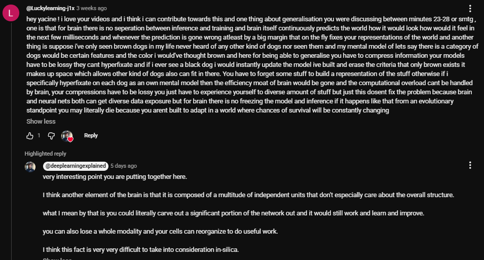

How this started
When my high school shut down near the end of junior year, all my friends joined another high school. I decided to stay home and dedicate myself full time to research, which produced most of these projects. I was already researching before that, and I enrolled elsewhere only to sit my exams.
No lab, no mentor, no advisor, no funding, no university affiliation, no professor's help. Just me, my laptop and LLMs, plus GPUs I rented when an experiment needed them.
Top standout
I replicated a headline AI result, then found a far simpler route to most of the same gain.
Researchers reported that GPT-6 Astra could edit a model's weights directly, taking it from 7.9% to 48.1% on MATH-500. I rebuilt the edit from their published logs and scored 54.0%, so the result holds up. Then I turned the model's thinking off, with no edit at all. Across both benchmarks that reached 48.8%, about 76% of the edit's gain at about one-seventh of the tokens. The edit still wins at 61.0%, so it is a real improvement, just much smaller than the headline jump suggests. Thinking off used the model card's own settings, so the comparison is not perfectly matched. These were exploratory runs and have not been peer reviewed.
Read the repoWhat sets the work apart
- I commit before I see the data. Most of these projects set their hypotheses, kill criteria or decision rules in advance. In one, 9 of 14 scored hypotheses were killed by their own criteria.
- I publish what failed. I report when no new method beat a tuned baseline, when no biology-to-AI mapping was supported, and when a fresh re-implementation flipped my own conclusions.
- My numbers can check themselves. In several projects, tests or CI fail if the headline numbers stop matching the stored results.
How this was built. I come up with my own hypotheses, make the decisions and design most of the experiments. I stress-test each design for edge cases with Claude and improve it iteratively. Claude Code did most of the implementation and helped with execution and review. In physics, I asked all 171 questions myself, and Claude was used for citations, formatting and code execution.
Why
Why I do the things I do
The god-tier problem
P vs NP is the god-tier problem, and it is the one I want to solve. It asks whether every problem whose answer can be checked quickly can also be solved quickly. It has been open for more than fifty years. Proving it, yes or no, might be one of the greatest things humanity ever achieves. I have not solved it, and neither has anyone else.
The reason I work on AI is that the two feed each other. AI can help us search for ideas and proofs that are out of reach today. And an answer to P vs NP would tell us what search and learning can and cannot do efficiently, which is exactly what we need to know to build even better AI.
Why I am pro-AI
I am pro-AI. I think it is one of the most important things humanity has ever built, because it took us into the meta-layer of innovation. For most of history we built tools that assist us. Now we are building something that can help with the act of innovating itself.
What worries me about abundance
Tech leaders speak of abundance. But humans never evolved to get everything without spending energy. When the energy we spend gets very low compared with what we get back, I do not think the brain handles it well.
This worry is old. Roman writers already complained about it: the poet Juvenal mocked a public that had given up its civic duties for bread and circuses. Historians still argue over how much hedonism had to do with Rome's decline, but the concern was real to the people living through it.
Then there is John Calhoun's mouse utopia, Universe 25, begun in 1968. The mice had plenty of food and water, shelter and no predators. The colony grew to about 2,200, then social behaviour broke down, births collapsed and it died out. Mice are not people, and what the experiment means for humans is still disputed, but I take it as a warning.
So I do not think the answer is to stop AI from taking our work. If abundance comes, I would rather change the side that cannot keep up. I want us to explore gene editing, and to use advancing AI itself, to reach a day when we can program the human brain safely. Nobody can do that today, and "safely" is the hardest word in that sentence.
A conversation
A researcher in the field called my point on generalisation very interesting
On one of Yacine Mahdid's videos, I argued that the brain never separates inference from training. It keeps predicting the next few milliseconds, and a large error fixes its representations on the fly. It also has to compress lossily. If I had only ever seen brown dogs, the first black dog should erase that criterion and make room for every other kind. Keep a separate model of each dog and the brain's efficiency is gone.
Yacine, a computational neuroscientist who runs the channel Deep Learning with Yacine, replied "very interesting point you are putting together here" and built on it: the brain is made of many independent units, so it can lose a large part of itself and keep learning, which is very hard to reproduce in silico.

A position, held loosely
My take on the simulation hypothesis
When someone says we are in a simulation, my first question is who built the computer. Then who built theirs. I noticed that this question only ever produces another floor. The usual version of the theory stacks parent universes on child universes forever, and explaining each one by the one above it is the same linear cause-and-effect trap I was trying to get out of.
So I stopped asking whether the simulator sits in base reality or in a sandbox, because I think that question carries the mistake inside it. It assumes there is a bottom floor holding everything up. My view is that there is none. The tower does not run up or down forever. It curls into a circle.
That changes what a simulator is. It is no external god in a pristine, ultimate universe while we sit in a fake box. The creator and the creation are two nodes in the same self-referential loop, and they hold each other up like two boards leaning together in a V.
It also removes the need for the machine. Reality does not need a supercomputer of silicon or quantum hardware running in a parent universe. The simulation is the reality, and the reality is the loop. It exists because its mathematical and logical relations close the circuit on themselves, with no outside creator.
I hold this as a position, and I cannot test it. I also know why it appeals to me: it dissolves a regress I find unsatisfying, and that feeling is no evidence that it is true. The weakest point is the one I would press first if this were someone else's idea. A loop may explain why nothing outside it is needed, but it does not explain why there is a loop at all. I would rather leave that gap visible than talk as if it were closed.